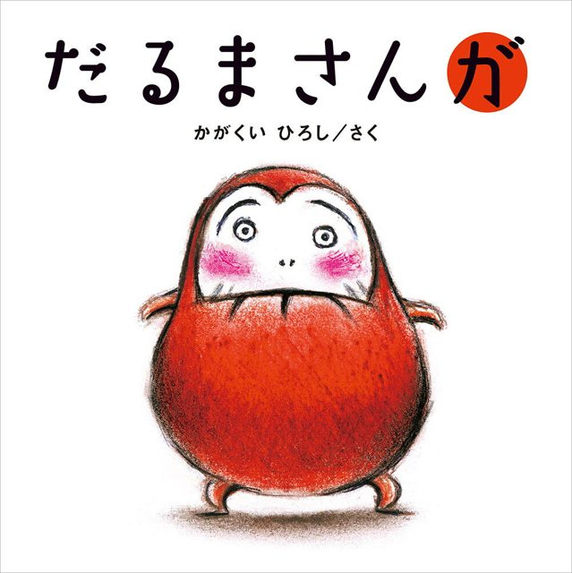

なぜ「上の子にも」が効くのか
2人目の出産祝いが難しいのは、赤ちゃん用品がだいたい揃っているからです。1人目のときは「初めて」だから喜ばれた品も、2人目ではお下がりと在庫の前では力を失います。贈る側の声にも、「だいたい揃っていると思うから、何をあげたらいいか分からない」という迷いが繰り返し見られました。そこで効いてくるのが、発想の転換です。贈る相手を、赤ちゃん一人ではなく「家族」に広げること。その中心が、上の子への小さな同梱です。
ハッピー・ノートの2人目向け調査では、贈り方として「上の子にも何かあげる」が約31.6%でした。受け取り側の声でも、上の子向けの絵本や服が同梱されていたことに感動したという例が見られます。Xでは「プレゼントが自分宛でないと上の子が泣く」という体験談が約2.1万いいねと大きな共感を集め、実家からの便に長女向けの絵本2冊と長女の服が入っていた例も支持を集めました（いいね3,415）。
理由は時期にあります。赤ちゃんが生まれると、上の子は我慢する場面が増え、親も「上の子に構えていない」という負い目を抱えがちです。そのタイミングで「お兄ちゃん／お姉ちゃんにもあるよ」という形の贈り物が届くと、上の子には「自分も大事にされている」という確認になり、親には負い目の軽減になります。金額の大きさではなく、宛名が上の子になっていることが効くのです。「自分宛でないと泣く」という投稿に約2.1万いいねが集まったのは、上の子の気持ちの揺れが、それだけ多くの家庭で起きていることの表れでもあります。
この記事では、上の子への同梱について「何を・いくらで・どう渡すか」をまとめます。本体ギフトの選び方は総合記事「二人目の出産祝いは何が正解？」に譲ります。
→ 本体選びから入りたい方はこちら：二人目の出産祝いは何が正解？ もらった側の本音調査まとめ
まず確認すること：年齢・性別・今好きなもの
上の子ギフトで外す原因は、本体と同じく確認不足です。贈る前に、次の3点をさりげなく確認してください。
- 年齢：品目の選び方が年齢でまったく変わります（後述の年齢別の目安）。
- 性別：お揃いの服など、性別で分かれる品を選ぶ場合に必要です。
- 今好きなもの：キャラクター、乗り物、恐竜、お絵かき——「今」の好みは移ろいやすいので、親への確認が確実です。
聞き方は「上の子ちゃん、何が好きなの？」で十分です。本人に欲しいものを聞いた家庭では、「1人目のサイズの服（お下がりで下の子にも着せるから）」という合理的な答えが返ってきた例もありました。上の子への服は、実質的に2人目への贈り物にもなります。
→ 贈る前の確認項目の全体像はこちら：2人目の出産祝い、贈る前に確認したいこと
品目別：実際に選ばれているもの
絵本（いちばん無難な本命）
上の子ギフトの中心です。Xの集計では、絵本は嬉しい3件で、支持は具体タイトルに集まっていました（『おべんとうバス』、こぐまちゃん絵本セット、『ラヴ・ユー・フォーエバー』など）。『ラヴ・ユー・フォーエバー』は「中学生になった今も読み返す」と語られていて、絵本は年単位で残る数少ないカテゴリです。図書カード（後述）で買われた本も、多くは上の子を含むきょうだいの本でした。「ベビー用品は揃っている家庭でも、本は不足する」という構造が、絵本の強さの背景にあります。
注意点は2つ。ひとつは定番タイトルの重複で、各家庭に揃いやすい有名タイトルより、少しひねった選書が安全です。もうひとつは音の出るタイプで、「刺激が強い」という困り例があるため、静かな本が無難です。めくる仕掛けのあるタイプは小さい子の興味を引きますが、音が出るかどうかは別軸で確認してください。価格帯は1,500〜3,000円。


小さい子（1〜2歳）には、破れにくい布絵本や厚紙の絵本が向きます。

お揃い（服・小物）
きょうだいお揃いの服は、2人目ママの「特に嬉しかった」に挙がる品目です（ハッピー・ノート調査）。写真に残ることも多く、記念の側面があります。服以外では、兄弟ペアの名入れグラス（「つよいこグラス」）のような、お揃いの名入れ小物も好例として挙がっています。ただしサイズと季節の確認が前提で、本体（下の子）の服とセットで贈る場合は、上の子のサイズを必ず確認してください。前述のとおり、本人が「1人目のサイズの服」を希望する例もあり、実用面でも合理的です。下の子と性別が違う場合は、お揃いの服ではなく、色違いの小物など「対になる形」に変えると成立させやすくなります。
小さなおもちゃ・文房具・シール
ミニカーやパズル、クレヨン・シールなど、上の子が一人でも遊べるものは、親の負担にならない点でも選ばれています。大きすぎるおもちゃは置き場所の問題になるため、「小さく・かさばらない」が原則です。音の出るおもちゃは、絵本と同じ理由で避けたほうが無難です。
お菓子
個包装の子ども向けお菓子は、開封の場で一緒に渡せる手軽さがあります。アレルギーの確認だけは前提です。日持ちするものを選んでください。
図書カード（年齢が上なら）
図書カードは、Xの集計で嬉しい4件／困った0件でした。うち3件が2人目以降で、全員が上の子を含むきょうだいの本に使っていました。「ベビー用品は揃っている家庭でも、本は不足する」という構造です。価格帯は1,000〜5,000円。自分で本を選べる年齢の上の子には、実物の絵本より図書カードのほうが「自分で選んだ」体験まで贈れます。図書カード自体はアフィリエイト対象外のため、この節は声の紹介のみとします。詳しくは図書カードの単独ガイドもどうぞ。
年齢別の目安
品目選びの目安を年齢で整理すると、次のようになります（調査で断定された区分ではなく、品目の性質からの編集整理です）。
| 上の子の年齢 | 向くもの | 注意点 |
|---|---|---|
| 1〜2歳 | 布絵本・厚紙の絵本、小さなお菓子 | 口に入れる前提の安全性。音の出るものは避ける |
| 3〜4歳 | 絵本、シール・クレヨン、小さなおもちゃ | 今好きなキャラクター等の確認が効く |
| 5歳以上 | 図書カード、本、お揃いの小物 | 自分で選べる形（図書カード）が喜ばれる |
組み立て例：本体との組み合わせ
上の子分は単体で考えるより、本体との組み合わせで設計すると決めやすくなります。実家からの便に、長女向けの絵本2冊と長女の服が入っていた例（いいね3,415）が支持を集めたように、「本体＋上の子分」の便そのものが1つの形です。代表的な型は次の3つです（品目はいずれも当サイトの集計で安全圏とされたもの）。
- 消耗品の本体＋絵本：おしりふき等の本体に、上の子向けの絵本を1冊。「消えるもの＋残るもの」で、家族全員に宛名が届きます。
- 食事系の本体＋お菓子：冷凍スープ等の本体に、上の子の個包装のお菓子。産後の食事支援と、開封の場での上の子の楽しみが両立します。
- ギフトカード＋図書カード：本体を「選べる形」にした場合は、上の子分も図書カードで「自分で選べる形」に揃えると、設計が一貫します。
渡し方：別袋で、上の子に直接
品が決まったら、渡し方です。上の子へのプレゼントは、下の子へのギフトとは別の袋に入れて、上の子に直接手渡すのが型です。「赤ちゃんにだけじゃなくて、お兄ちゃん／お姉ちゃんにもあるよ」という形で渡すと、宛名の効果が最大になります。
逆に、下の子のギフトに紛れてしまうと「なんで自分にはないの」という気持ちにさせてしまうことがあります。配送で贈る場合も、中で袋を分けて、上の子宛てと分かるようにしておくことが大切です。里帰り中の家庭に贈る場合は、届け先が自宅か里帰り先かも、本体の配送先とあわせて確認してください。
予算の目安
上の子分は1,000〜3,000円が目安です。本体より目立たせないことが原則で、金額よりも「上の子にもちゃんと選んだ」という宛名の設計が効きます。合計予算での内訳の例は次のとおりです。
| 合計予算 | 内訳の例 |
|---|---|
| 5,000円 | 下の子に3,000円＋上の子に2,000円 |
| 8,000円 | 下の子に5,000円＋上の子に3,000円 |
| 10,000円 | 下の子に7,000円＋上の子に3,000円（絵本＋小さなおもちゃ） |
→ 予算全体の組み立て方はこちら：二人目の出産祝い 予算別ガイド
避けたいこと
- 本体より目立つもの：上の子分が高額・大型だと、主従が逆転します。
- 音の出る絵本・おもちゃ：「刺激が強い」という困り例があります。
- 年齢に合わないもの：小さな子に細かい部品の多いおもちゃ、大きな子に赤ちゃん向けの絵本は、宛名の効果を消します。
- 確認なしのお揃い服：サイズが外れると、お揃い自体が成立しません。
よくある質問
上の子にだけ贈るのはありですか？
形としてはあり得ますが、基本は「本体＋小さな同梱」です。下の子へのお祝いが主で、上の子分は1,000〜3,000円の添え物、という分量感が調査と声の中心でした。本体なしで上の子分だけを贈ると、お祝いの主旨がぼやけます。
上の子の年齢や好みが分からない場合は？
無理に当てにいかず、親に一言確認するのが確実です。聞けない場合は、年齢に依存しにくい図書カードか、本体側の安全圏（おしりふき等の消耗品）に寄せ、上の子分は小さなお菓子程度に留めるのが無難です。
きょうだいが2人以上いる場合は？
上の子が複数いる場合は、全員に小さなものを揃えるのが原則です。一人だけに宛名があると、残りの子の気持ちの問題になります。単価を下げてでも、全員分を揃えてください。
まとめ
- 上の子への同梱は、2人目の贈り方として約31.6%が実践する作法です。効くのは金額ではなく「宛名が上の子になっていること」です。
- 品目の中心は絵本（静かな本・重複注意）、お揃い、図書カード。年齢で選び方が変わるため、年齢・性別・今好きなものの確認が前提です。
- 予算は1,000〜3,000円、本体より目立たせない。渡し方は別袋で上の子に直接手渡します。
この記事について
広告・PRについて
※この記事にはアフィリエイト広告（PR）が含まれます。記事内のリンクからご購入いただくと、当サイトに紹介料が支払われる場合があります。なお、記事の内容は広告の有無ではなく、下記の調査根拠に基づいて決めています。価格は各リンク先でご確認ください（絵本の単品価格は本文に置かず、価格帯のみ記載しています）。
調査根拠・出典
この記事はママたちへの調査・SNSの声をもとに作成しています。調査データの出典：ハッピー・ノート、リンベル各調査、およびX上の体験談集計（2026年11月）。受け取り体験は調査結果とSNS上の声をもとに構成しており、特定の個人の体験談として創作したものではありません。